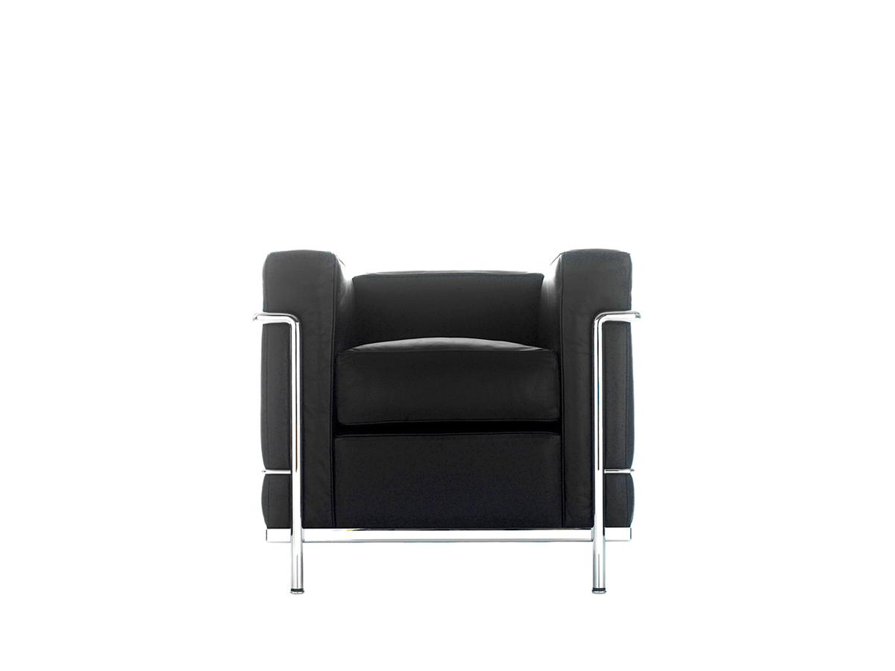
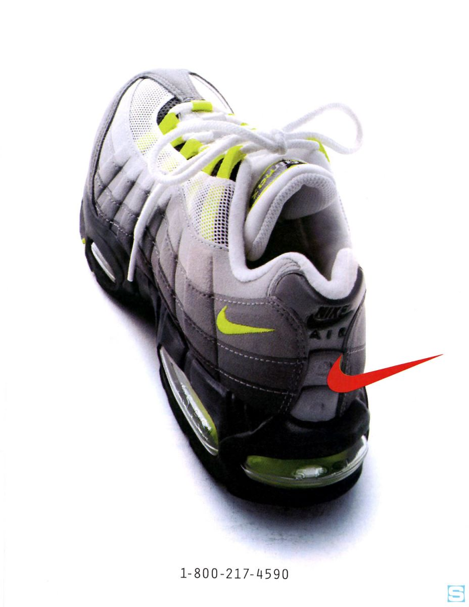
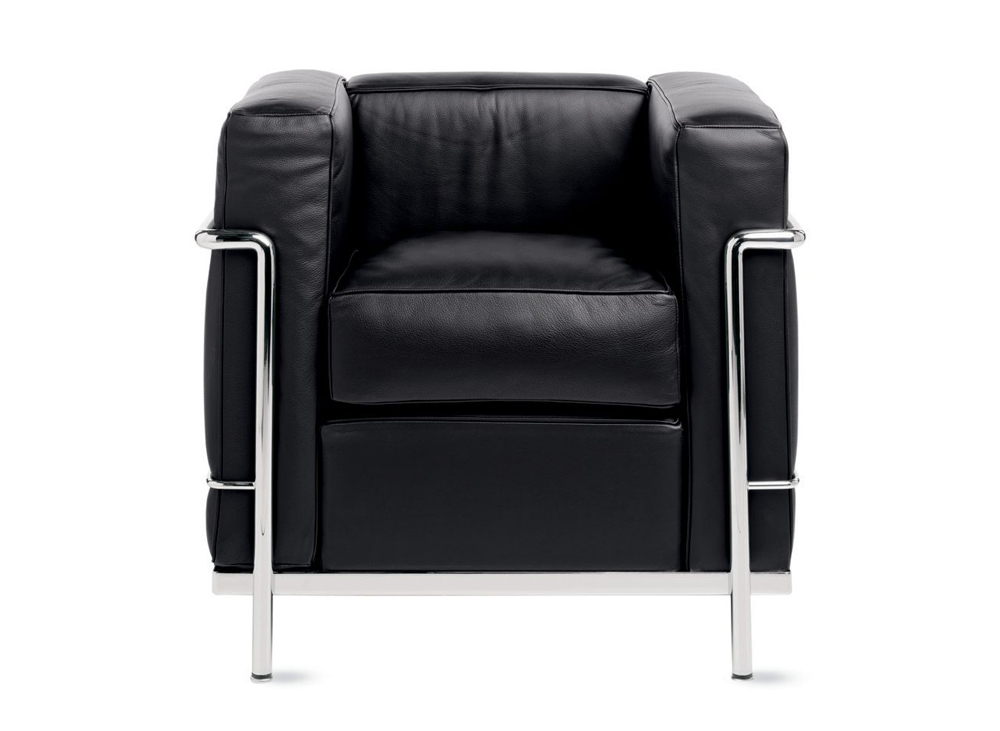
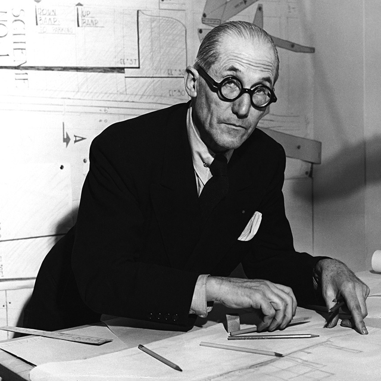
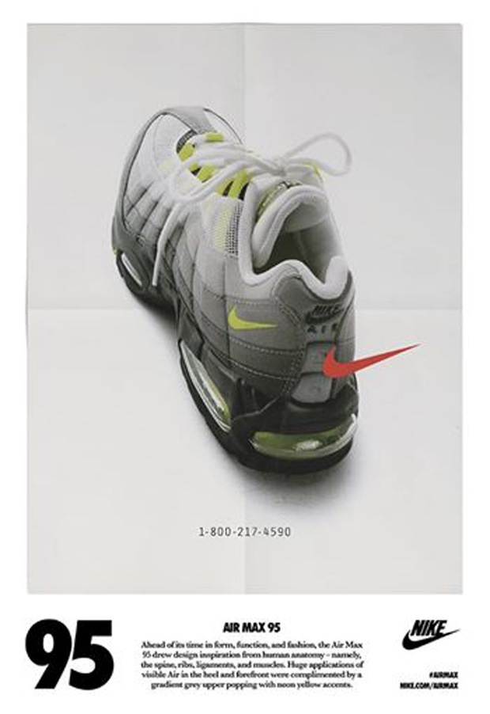

LC2 ARMCHAIR - 1928
Le Corbusier adopted his name in 1920 from his given name Charles-Edouard Jeanneret. It was his endeavor to show that anyone could reinvent themselves. (Additionally it was vogue at the time in Paris to identify oneself with a single word.)
"Modern life demands, and is waiting for, a new kind of plan, both for the house and the city,"" he said in 1923.
Designed in 1928 and exhibited at the Salon d'Automne in Paris in 1929, Le Corbusier chair is the archetypal armchair in the new and modern conception of furnishings understood as "domestic equipment". Re-issued by Cassina and produced exclusively since 1965, the separation of the metal frame and the cushions expresses a rationalist approach to industrial production.
Le Corbusier adopted his name in 1920 from his given name Charles-Edouard Jeanneret. It was his endeavor to show that anyone could reinvent themselves. (Additionally it was vogue at the time in Paris to identify oneself with a single word.)
"Modern life demands, and is waiting for, a new kind of plan, both for the house and the city,"" he said in 1923.
Designed in 1928 and exhibited at the Salon d'Automne in Paris in 1929, Le Corbusier chair is the archetypal armchair in the new and modern conception of furnishings understood as "domestic equipment". Re-issued by Cassina and produced exclusively since 1965, the separation of the metal frame and the cushions expresses a rationalist approach to industrial production.


AIR MAX 95
Created by Sergio Lozano, the design was inspired by the human body: the midsole was based on the spine, serving as the backbone of the design. Nylon eyelets represented ribs, while the upper's layered panels and mesh symbolized muscle fibers and flesh. Compared to other running shoes it was controversial at the time and completely new. For example, running shoes didn't use a black midsole before – because you can't see dirt on it. It was cherished both by runners – who loved the support – and on the street. Heads in countries like Japan were among the first to adopt the model for casual wear. With the release of this shoe, the trademark swoosh moved from being dominantely big in the middle to a small mark on the heel.
Created by Sergio Lozano, the design was inspired by the human body: the midsole was based on the spine, serving as the backbone of the design. Nylon eyelets represented ribs, while the upper's layered panels and mesh symbolized muscle fibers and flesh. Compared to other running shoes it was controversial at the time and completely new. For example, running shoes didn't use a black midsole before – because you can't see dirt on it. It was cherished both by runners – who loved the support – and on the street. Heads in countries like Japan were among the first to adopt the model for casual wear. With the release of this shoe, the trademark swoosh moved from being dominantely big in the middle to a small mark on the heel.